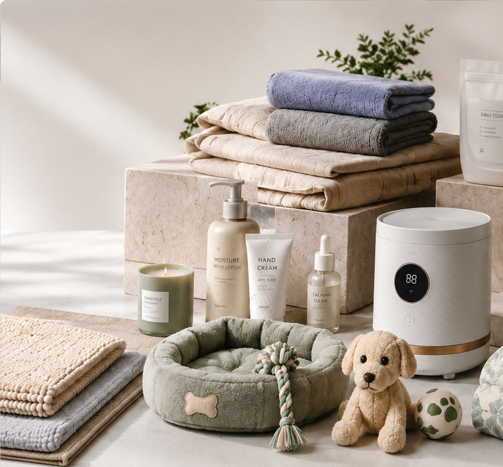

UNDERSTAND
Market · Consumer · Use · Opportunity
We develop and source everyday consumer products by connecting market needs with China's manufacturing capabilities.

Products are part of everyday life.
The towel we use in the morning. The detergent that keeps a home clean. The products that care for our families, our homes and our pets.
We believe everyday products deserve thoughtful development, reliable quality and fair value.
Better everyday products can make everyday life a little better.Behind the products is manufacturing.
Behind the quality are standards.
But in front of the customer is a better everyday life.
This is how we think about products.Manufacturing is the foundation.
Based in Shandong, Zibo Poly works close to one of China's established manufacturing regions, with access to broad production capabilities and experienced suppliers.
Beyond Shandong, we work with specialized manufacturing regions across China according to the needs of each product.
Built on Manufacturing. Guided by Standards. Driven by Value.A good price means little without a clearly defined product.
Before comparing price, we first understand the product, how it will be used, what it should be made from, how it should perform, and what standards are appropriate.
Define the product first. Then find the right value.Market · Consumer · Use · Opportunity
Product · Material · Specification · Standard
Factory · Sample · Testing · Packaging
Quality · Performance · Consistency
Production · Cost · Logistics · Value
Good sourcing is not simply finding a supplier. It is building the right product with the right manufacturing capability.
Our categories continue to evolve with market needs and product opportunities.
Home essentials · Storage · Mats · Everyday household products
Bedding · Towels · Blankets · Bath & comfort products
Laundry care · Household cleaning · Everyday cleaning solutions
Gloves · Storage bags · Selected disposable products
Everyday pet care products & accessories
Selected personal care · Beauty · Cosmetics
Selected practical appliances for everyday living
New consumer categories developed around market needs and product opportunities.
Better value comes from the right material, the right specification, the right manufacturing capability, consistent quality and a price appropriate for the market.
Sometimes the answer is a better product. Sometimes it is a simpler product. Sometimes it is a better way to make it.
Our job is to find the right balance.We work with factories. We study products. We care about standards. We manage quality and value.
For cleaner homes.
More comfortable living.
Easier everyday routines.
And a little more joy in ordinary life.
For sourcing, product development and manufacturing enquiries:
poly@zbpoly.com